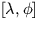
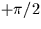

Returns the bearing (position angle) of one celestial
direction with respect to another (double precision).
CALL:
D = sla_DPAV (V1, V2)
GIVEN:
V1
D(3)
direction cosines of one point
V2
D(3)
directions cosines of the other point
RETURNED:
sla_DPAV
D
position-angle of 2nd point with respect to 1st
NOTES:
1.
The coordinate frames correspond to , etc..
2.
The result is the bearing (position angle), in radians,
of point V2 as seen
from point V1. It is in the range . The sense
is such that if V2
is a small distance due east of V1 the result
is about . Zero is returned
if the two points are coincident.
3.
The routine sla_DBEAR performs an equivalent function except
that the points are specified in the form of spherical coordinates.